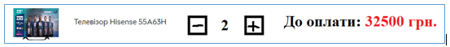
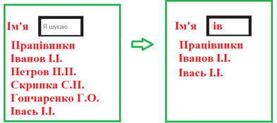

Домашнее задание к уроку 20
-
Задача 1.
Розробити елемент для вводу кількості вибраного товару за зразком (мінімальна кількість 1, максимальна кількість 10, при перевищенні блокувати кнопку)
 -
Задача 2.
Динамічний пошук. Є список працівників і поле пошуку. При введенні відображаються усі, які містять вказаний фрагмент
 -
Задача 3.
Дано список автомобілів (марка, рік випуску, ціна). Сформувати елементи для фільтрування з використанням випадаючого списку (контент цих випадаючих списків сформувати у залежності від переданого списку).

-
Задача 4.
Перекладач. Користувачу виводять змішані картки з словами на англійській і українській мові. Користувач поступово клікає на картки (виділяємо синьою рамкою). Якщо знайдено правильні пари карток, що відповідають одному слову, то видаляємо ці картки. Інакше - виділяємо червоною рамкою і через секунду забираємо рамку.